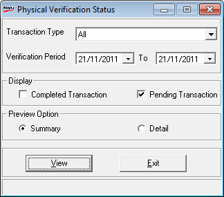

This report provides information on the status of the physical verification and is helpful during inwarding/ receipt of goods. View this report either in detailed or summary mode based on the type of transaction, verification period and status of transaction - completed or pending.
How to reach: Reports > Stock > Physical Verification Status
The Physical Verification Status Report window is displayed.

Transaction Type: Select the type of transaction .
Verification Period: Select the period to verify stock.
Display
Completed Transaction: Select to include the physically verified and inwarded/ consumed transactions.
Pending Transaction: Select to include the physically verified and yet to be inwarded/ consumed transactions.
Preview Option
Select Summary or Detail to view the corresponding report. Summary report shows the overall status of the physical verified stock of the selected transaction type. Detailed report gives all information about each transaction like supplier, document number and date, document and physical quantity, type of transaction, status, either Pending or Inwarded, etc.